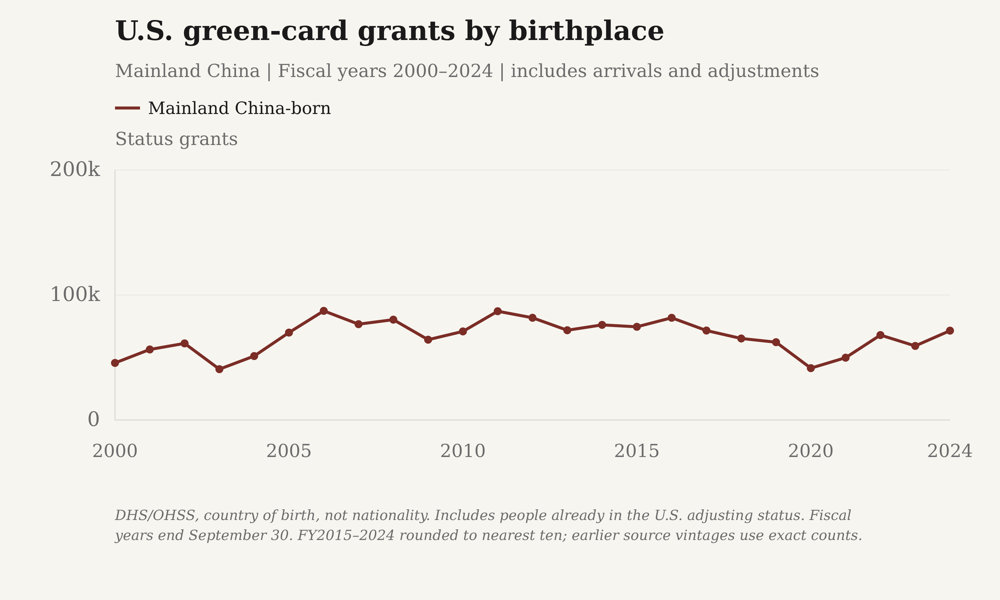
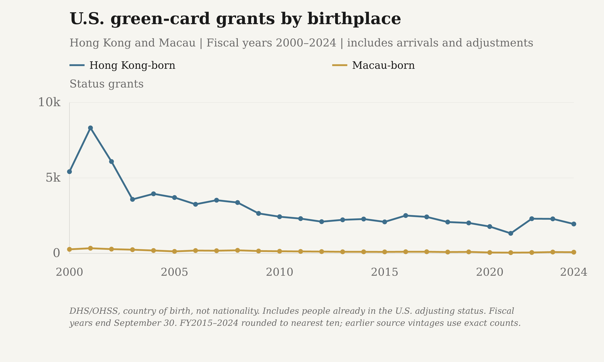
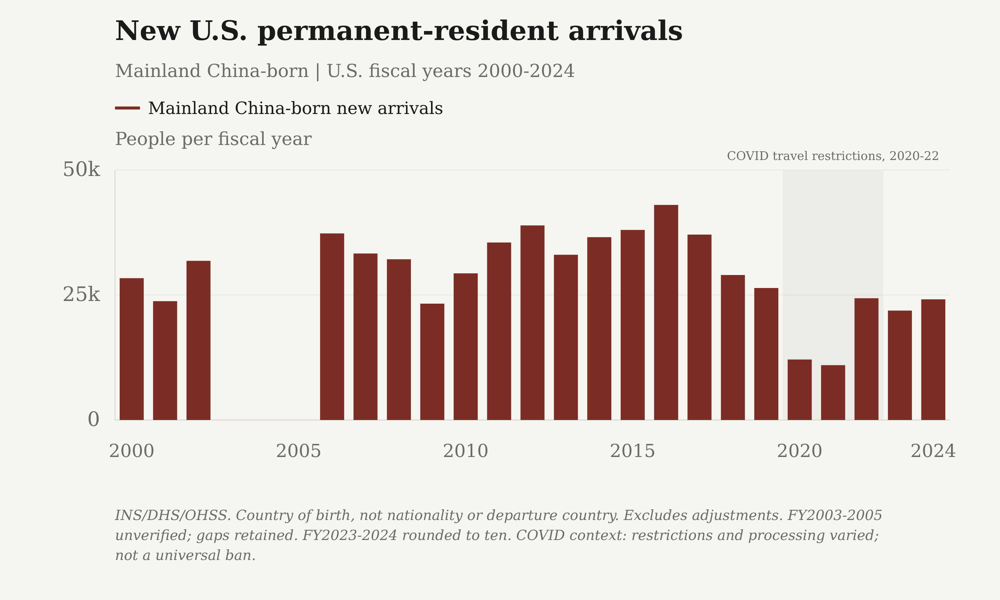
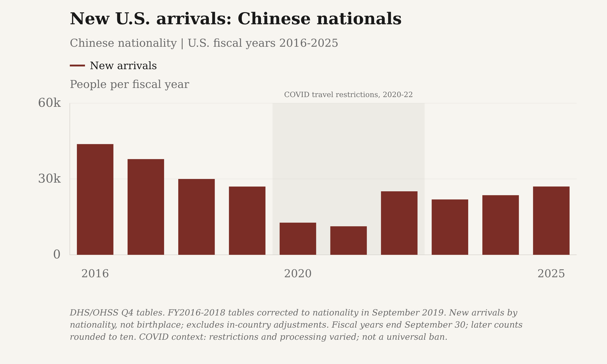
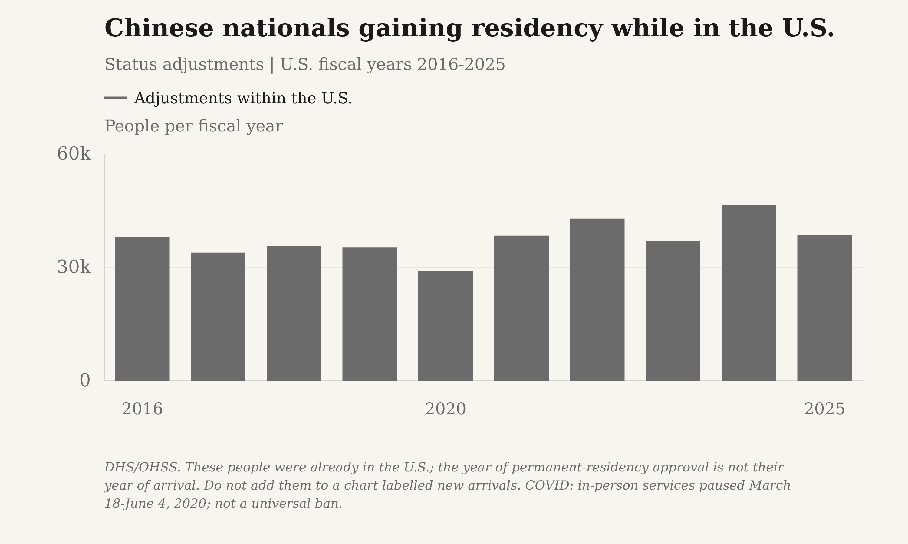
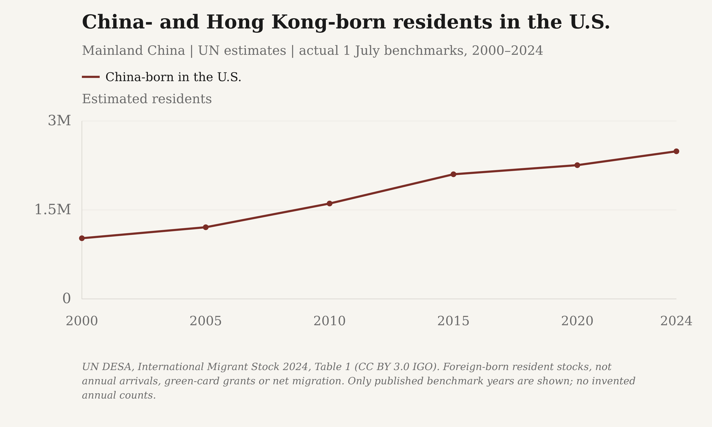
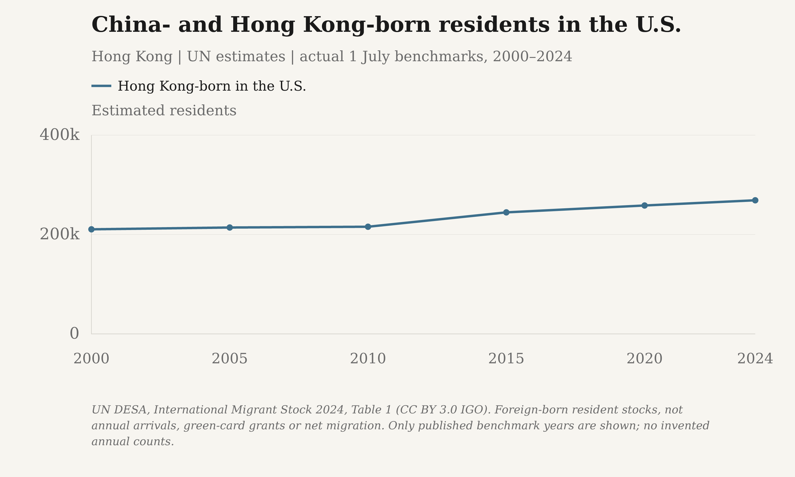
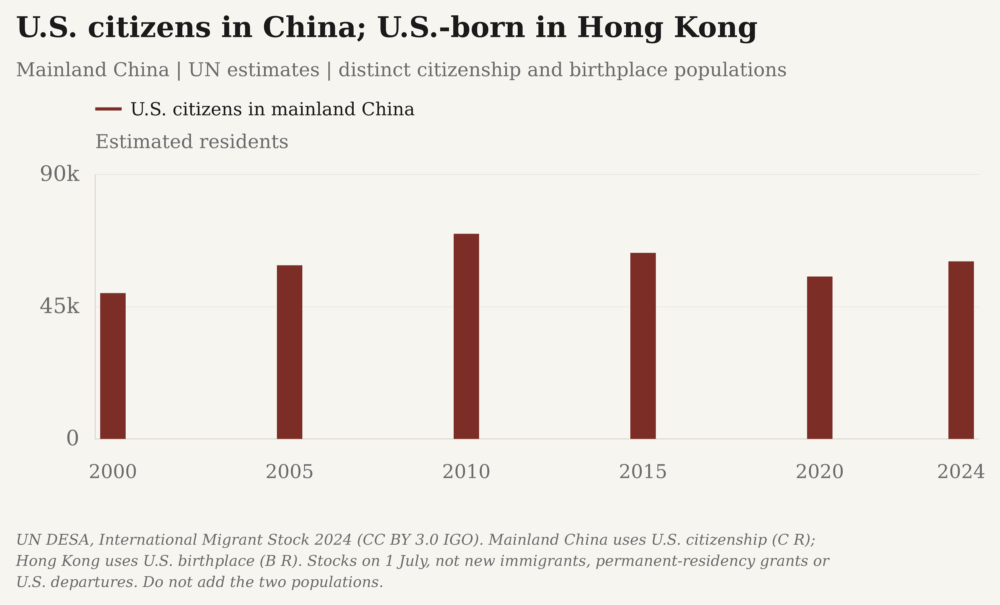
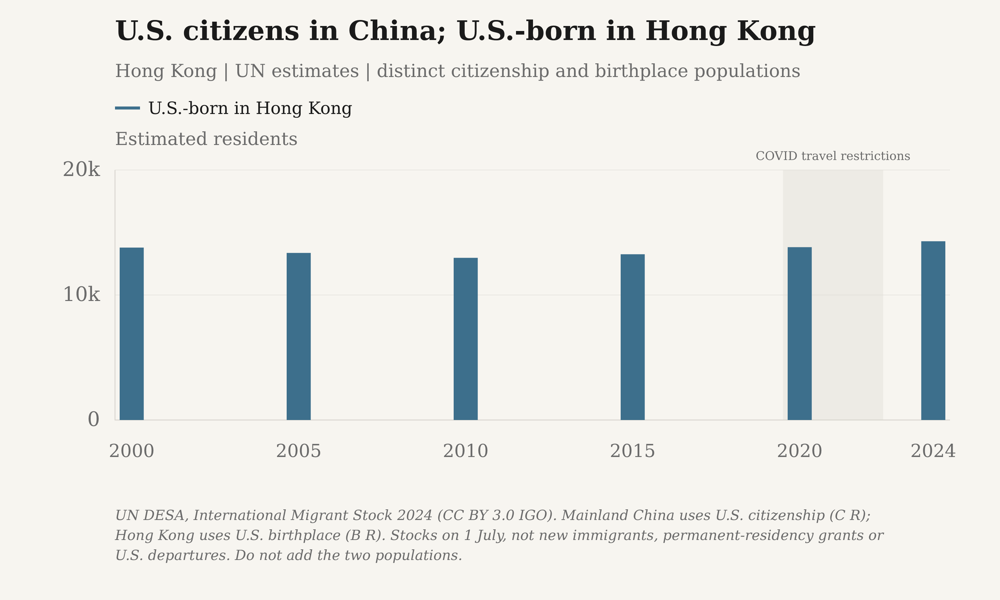
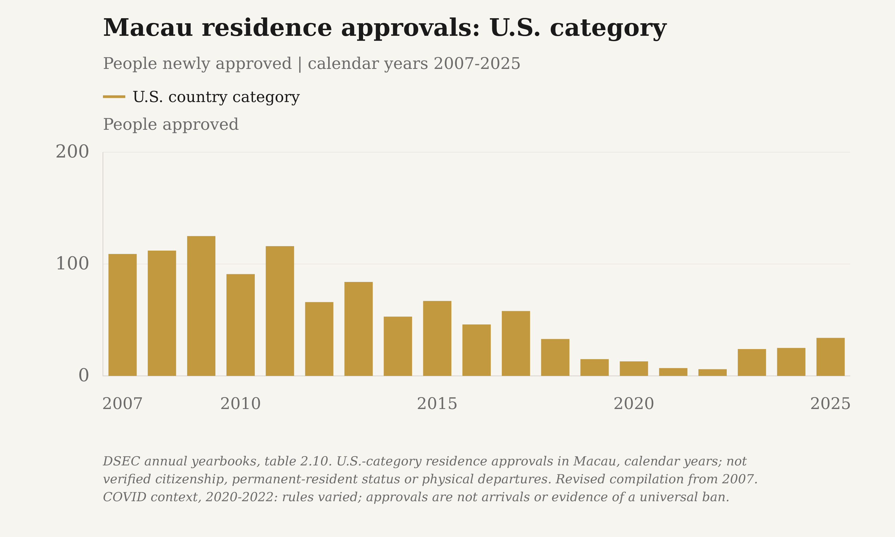

China-born residents, by U.S. state
2020-2024 ACS five-year estimates
China excludes Hong Kong and Taiwan. Percentages are of each state’s foreign-born residents, not its total population. Alaska and Hawaii use separate inset scales.
About these estimates
These are resident population estimates, not annual arrivals or green-card grants. Foreign-born means not a U.S. citizen at birth, including naturalized citizens. The same five-year period is used across all 50 states and D.C.; the estimates do not describe a single year. Census does not separately identify Macau in this category. Reported count margins of error use 90% confidence; the derived percentage has no calculated percentage margin of error.
Source: U.S. Census Bureau, American Community Survey, table B05006.
All state estimates
| State | China-born residents | Share of immigrants | All foreign-born residents | China-born MOE | Foreign-born MOE |
|---|---|---|---|---|---|
| Alabama | 8,900 | 4.37% | 203,578 | 851 | 4,382 |
| Alaska | 1,221 | 2.15% | 56,745 | 308 | 1,983 |
| Arizona | 21,449 | 2.24% | 957,784 | 1,630 | 9,229 |
| Arkansas | 2,811 | 1.70% | 165,740 | 510 | 3,657 |
| California | 693,052 | 6.54% | 10,598,272 | 9,048 | 33,818 |
| Colorado | 18,028 | 3.13% | 576,653 | 1,269 | 7,528 |
| Connecticut | 24,345 | 4.28% | 569,177 | 1,442 | 7,436 |
| Delaware | 5,507 | 5.04% | 109,282 | 799 | 3,476 |
| District of Columbia | 3,529 | 3.62% | 97,388 | 655 | 2,807 |
| Florida | 55,934 | 1.14% | 4,905,608 | 2,759 | 26,326 |
| Georgia | 43,238 | 3.54% | 1,222,749 | 2,223 | 12,758 |
| Hawaii | 20,826 | 8.04% | 259,001 | 1,665 | 4,935 |
| Idaho | 2,299 | 2.00% | 114,849 | 368 | 3,412 |
| Illinois | 74,170 | 3.96% | 1,872,449 | 2,920 | 12,939 |
| Indiana | 18,730 | 4.34% | 431,255 | 1,278 | 5,678 |
| Iowa | 6,972 | 3.67% | 189,988 | 872 | 3,624 |
| Kansas | 7,123 | 3.29% | 216,817 | 925 | 4,264 |
| Kentucky | 6,397 | 3.03% | 211,210 | 797 | 4,791 |
| Louisiana | 6,292 | 2.80% | 224,537 | 804 | 4,508 |
| Maine | 2,534 | 4.49% | 56,448 | 463 | 1,908 |
| Maryland | 45,717 | 4.44% | 1,030,605 | 2,169 | 10,437 |
| Massachusetts | 103,209 | 8.12% | 1,271,206 | 2,931 | 9,721 |
| Michigan | 33,127 | 4.54% | 728,881 | 1,498 | 7,799 |
| Minnesota | 16,782 | 3.37% | 497,719 | 1,134 | 5,891 |
| Mississippi | 3,345 | 4.65% | 71,918 | 561 | 2,397 |
| Missouri | 16,394 | 5.90% | 277,967 | 1,227 | 4,970 |
| Montana | 1,136 | 4.42% | 25,679 | 321 | 1,394 |
| Nebraska | 3,753 | 2.36% | 159,084 | 526 | 3,474 |
| Nevada | 21,452 | 3.52% | 609,066 | 1,460 | 5,868 |
| New Hampshire | 3,571 | 4.17% | 85,632 | 528 | 2,529 |
| New Jersey | 84,155 | 3.76% | 2,236,554 | 2,450 | 14,568 |
| New Mexico | 3,008 | 1.51% | 199,738 | 522 | 4,158 |
| New York | 409,509 | 9.05% | 4,525,937 | 6,366 | 18,576 |
| North Carolina | 29,098 | 2.99% | 973,325 | 1,750 | 9,858 |
| North Dakota | 832 | 2.25% | 36,962 | 302 | 1,714 |
| Ohio | 33,147 | 5.38% | 616,061 | 1,858 | 7,112 |
| Oklahoma | 7,884 | 3.08% | 256,215 | 753 | 3,515 |
| Oregon | 19,544 | 4.67% | 418,367 | 1,560 | 6,409 |
| Pennsylvania | 69,546 | 6.92% | 1,004,975 | 2,535 | 9,340 |
| Rhode Island | 5,236 | 3.11% | 168,502 | 753 | 3,932 |
| South Carolina | 8,420 | 2.76% | 305,101 | 1,016 | 4,899 |
| South Dakota | 1,283 | 3.57% | 35,988 | 367 | 2,066 |
| Tennessee | 12,855 | 2.98% | 431,545 | 1,169 | 6,949 |
| Texas | 120,914 | 2.28% | 5,302,466 | 4,150 | 27,225 |
| Utah | 8,169 | 2.70% | 302,552 | 788 | 4,566 |
| Vermont | 1,497 | 5.41% | 27,669 | 280 | 1,229 |
| Virginia | 42,379 | 3.71% | 1,142,826 | 2,222 | 10,365 |
| Washington | 94,643 | 7.84% | 1,206,843 | 3,045 | 9,550 |
| West Virginia | 1,490 | 4.61% | 32,329 | 350 | 1,528 |
| Wisconsin | 14,481 | 4.72% | 306,979 | 1,207 | 4,677 |
| Wyoming | 628 | 3.06% | 20,494 | 180 | 1,155 |
Download data & graphics
All 51 state/DC estimates · CSV · Complete data & sources · JSON · State outlines · GeoJSON
Share of immigrant residents
Download reported values as a high-resolution PNG or editable SVG:
- The Margin of Error: PNG (3000 × 1800) · SVG
- Substack: PNG (3000 × 1800) · SVG


Number of China-born residents
Download reported values as a high-resolution PNG or editable SVG:
- The Margin of Error: PNG (3000 × 1800) · SVG
- Substack: PNG (3000 × 1800) · SVG


U.S. green-card grants by birthplace
Same year range; separate vertical scales. Hong Kong or Macau is omitted only where this source has no series.
Mainland China

Download reported values as a high-resolution PNG or editable SVG:
- The Margin of Error: PNG (3000 × 1800) · SVG
- Substack: PNG (3000 × 1800) · SVG


Hong Kong and Macau

Download reported values as a high-resolution PNG or editable SVG:
- The Margin of Error: PNG (3000 × 1800) · SVG
- Substack: PNG (3000 × 1800) · SVG


Combined-scale reference downloads
Download reported values as a high-resolution PNG or editable SVG:
- The Margin of Error: PNG (3000 × 1800) · SVG
- Substack: PNG (3000 × 1800) · SVG


DHS/OHSS, country of birth, not nationality. Includes people already in the U.S. adjusting status. Fiscal years end September 30. FY2015–2024 rounded to nearest ten; earlier source vintages use exact counts.
USCIS suspended routine in-person services March 18, 2020; phased reopening began June 4, 2020. COVID-19 context is not a universal ban or an estimate of COVID's effect. Rules, exemptions and reopening dates varied by destination and category. U.S. fiscal years run October-September; Macau approvals use calendar years. In-country status adjustments are not border arrivals.
U.S. immigrant-entry suspension revoked February 24, 2021 · USCIS in-person service suspension and reopening, March-June 2020
Exact reported values
| Population | Period | Status grants | Precision |
|---|---|---|---|
| Mainland China-born | FY1989 | 32,272 | observed |
| Mainland China-born | FY1990 | 31,815 | observed |
| Mainland China-born | FY1991 | 33,025 | observed |
| Mainland China-born | FY1992 | 38,907 | observed |
| Mainland China-born | FY1993 | 65,578 | observed |
| Mainland China-born | FY1994 | 53,985 | observed |
| Mainland China-born | FY1995 | 35,463 | observed |
| Mainland China-born | FY1996 | 41,728 | observed |
| Mainland China-born | FY1997 | 41,147 | observed |
| Mainland China-born | FY1998 | 36,884 | observed |
| Mainland China-born | FY1999 | 32,204 | observed |
| Mainland China-born | FY2000 | 45,652 | observed |
| Mainland China-born | FY2001 | 56,426 | observed |
| Mainland China-born | FY2002 | 61,282 | observed |
| Mainland China-born | FY2003 | 40,659 | observed |
| Mainland China-born | FY2004 | 51,156 | observed |
| Mainland China-born | FY2005 | 69,933 | observed |
| Mainland China-born | FY2006 | 87,307 | observed |
| Mainland China-born | FY2007 | 76,655 | observed |
| Mainland China-born | FY2008 | 80,271 | observed |
| Mainland China-born | FY2009 | 64,238 | observed |
| Mainland China-born | FY2010 | 70,863 | observed |
| Mainland China-born | FY2011 | 87,016 | observed |
| Mainland China-born | FY2012 | 81,784 | observed |
| Mainland China-born | FY2013 | 71,798 | observed |
| Mainland China-born | FY2014 | 76,089 | observed |
| Mainland China-born | FY2015 | 74,560 | rounded |
| Mainland China-born | FY2016 | 81,770 | rounded |
| Mainland China-born | FY2017 | 71,570 | rounded |
| Mainland China-born | FY2018 | 65,210 | rounded |
| Mainland China-born | FY2019 | 62,250 | rounded |
| Mainland China-born | FY2020 | 41,480 | rounded |
| Mainland China-born | FY2021 | 49,850 | rounded |
| Mainland China-born | FY2022 | 67,950 | rounded |
| Mainland China-born | FY2023 | 59,260 | rounded |
| Mainland China-born | FY2024 | 71,470 | rounded |
| Hong Kong-born | FY1989 | 9,740 | observed |
| Hong Kong-born | FY1990 | 9,393 | observed |
| Hong Kong-born | FY1991 | 10,427 | observed |
| Hong Kong-born | FY1992 | 10,452 | observed |
| Hong Kong-born | FY1993 | 9,161 | observed |
| Hong Kong-born | FY1994 | 7,731 | observed |
| Hong Kong-born | FY1995 | 7,249 | observed |
| Hong Kong-born | FY1996 | 7,834 | observed |
| Hong Kong-born | FY1997 | 5,577 | observed |
| Hong Kong-born | FY1998 | 5,275 | observed |
| Hong Kong-born | FY1999 | 4,917 | observed |
| Hong Kong-born | FY2000 | 5,419 | observed |
| Hong Kong-born | FY2001 | 8,321 | observed |
| Hong Kong-born | FY2002 | 6,090 | observed |
| Hong Kong-born | FY2003 | 3,582 | observed |
| Hong Kong-born | FY2004 | 3,951 | observed |
| Hong Kong-born | FY2005 | 3,705 | observed |
| Hong Kong-born | FY2006 | 3,256 | observed |
| Hong Kong-born | FY2007 | 3,527 | observed |
| Hong Kong-born | FY2008 | 3,373 | observed |
| Hong Kong-born | FY2009 | 2,651 | observed |
| Hong Kong-born | FY2010 | 2,432 | observed |
| Hong Kong-born | FY2011 | 2,306 | observed |
| Hong Kong-born | FY2012 | 2,104 | observed |
| Hong Kong-born | FY2013 | 2,226 | observed |
| Hong Kong-born | FY2014 | 2,278 | observed |
| Hong Kong-born | FY2015 | 2,090 | rounded |
| Hong Kong-born | FY2016 | 2,510 | rounded |
| Hong Kong-born | FY2017 | 2,420 | rounded |
| Hong Kong-born | FY2018 | 2,080 | rounded |
| Hong Kong-born | FY2019 | 2,020 | rounded |
| Hong Kong-born | FY2020 | 1,780 | rounded |
| Hong Kong-born | FY2021 | 1,330 | rounded |
| Hong Kong-born | FY2022 | 2,300 | rounded |
| Hong Kong-born | FY2023 | 2,290 | rounded |
| Hong Kong-born | FY2024 | 1,950 | rounded |
| Macau-born | FY1989 | 246 | observed |
| Macau-born | FY1990 | 301 | observed |
| Macau-born | FY1991 | 267 | observed |
| Macau-born | FY1992 | 320 | observed |
| Macau-born | FY1993 | 334 | observed |
| Macau-born | FY1994 | 287 | observed |
| Macau-born | FY1995 | 373 | observed |
| Macau-born | FY1996 | 453 | observed |
| Macau-born | FY1997 | 277 | observed |
| Macau-born | FY1998 | 276 | observed |
| Macau-born | FY1999 | 294 | observed |
| Macau-born | FY2000 | 270 | observed |
| Macau-born | FY2001 | 342 | observed |
| Macau-born | FY2002 | 284 | observed |
| Macau-born | FY2003 | 246 | observed |
| Macau-born | FY2004 | 192 | observed |
| Macau-born | FY2005 | 133 | observed |
| Macau-born | FY2006 | 189 | observed |
| Macau-born | FY2007 | 178 | observed |
| Macau-born | FY2008 | 205 | observed |
| Macau-born | FY2009 | 158 | observed |
| Macau-born | FY2010 | 143 | observed |
| Macau-born | FY2011 | 130 | observed |
| Macau-born | FY2012 | 120 | observed |
| Macau-born | FY2013 | 106 | observed |
| Macau-born | FY2014 | 105 | observed |
| Macau-born | FY2015 | 100 | rounded |
| Macau-born | FY2016 | 110 | rounded |
| Macau-born | FY2017 | 110 | rounded |
| Macau-born | FY2018 | 90 | rounded |
| Macau-born | FY2019 | 100 | rounded |
| Macau-born | FY2020 | 60 | rounded |
| Macau-born | FY2021 | 50 | rounded |
| Macau-born | FY2022 | 60 | rounded |
| Macau-born | FY2023 | 90 | rounded |
| Macau-born | FY2024 | 80 | rounded |
New U.S. permanent-resident arrivals
Separate measure: U.S. green-card grants by birthplace, FY1989-FY2024. Includes new arrivals and in-country status adjustments, not new arrivals alone. Chinese-nationality arrivals, FY2016-FY2025, use a different population.

Download reported values as a high-resolution PNG or editable SVG:
- The Margin of Error: PNG (3000 × 1800) · SVG
- Substack: PNG (3000 × 1800) · SVG


INS/DHS/OHSS original arrivals tables and China birthplace profile. Country of birth, not nationality or previous residence; excludes in-country adjustments. FY2003-2005 have no verified arrivals breakdown in the reviewed tables and remain missing, not zero. Original annual source vintages are retained; no imputation or visa-issuance proxy is used. Fiscal years end September 30. FY2023-2024 rounded to ten. The separately labelled nationality series extends through FY2025; it is not appended here.
Shading marks the broad 2020-2022 travel-restriction period, not one policy's exact dates. COVID-19 context is not a universal ban or an estimate of COVID's effect. Rules, exemptions and reopening dates varied by destination and category. U.S. fiscal years run October-September; Macau approvals use calendar years. In-country status adjustments are not border arrivals.
U.S. immigrant-entry suspension revoked February 24, 2021 · USCIS in-person service suspension and reopening, March-June 2020
Exact reported values
| Population | Period | People per fiscal year | Precision |
|---|---|---|---|
| Mainland China-born new arrivals | FY2000 | 28,360 | observed |
| Mainland China-born new arrivals | FY2001 | 23,763 | observed |
| Mainland China-born new arrivals | FY2002 | 31,833 | observed |
| Mainland China-born new arrivals | FY2006 | 37,321 | observed |
| Mainland China-born new arrivals | FY2007 | 33,295 | observed |
| Mainland China-born new arrivals | FY2008 | 32,151 | observed |
| Mainland China-born new arrivals | FY2009 | 23,274 | observed |
| Mainland China-born new arrivals | FY2010 | 29,332 | observed |
| Mainland China-born new arrivals | FY2011 | 35,506 | observed |
| Mainland China-born new arrivals | FY2012 | 38,919 | observed |
| Mainland China-born new arrivals | FY2013 | 33,042 | observed |
| Mainland China-born new arrivals | FY2014 | 36,562 | observed |
| Mainland China-born new arrivals | FY2015 | 38,025 | observed |
| Mainland China-born new arrivals | FY2016 | 43,013 | observed |
| Mainland China-born new arrivals | FY2017 | 37,075 | observed |
| Mainland China-born new arrivals | FY2018 | 29,006 | observed |
| Mainland China-born new arrivals | FY2019 | 26,395 | observed |
| Mainland China-born new arrivals | FY2020 | 12,103 | observed |
| Mainland China-born new arrivals | FY2021 | 10,962 | observed |
| Mainland China-born new arrivals | FY2022 | 24,347 | observed |
| Mainland China-born new arrivals | FY2023 | 21,880 | rounded |
| Mainland China-born new arrivals | FY2024 | 24,140 | rounded |
U.S. → mainland China: a comparable annual count has not been verified. The resident-stock charts below are not annual arrivals.
New U.S. arrivals: Chinese nationals

Download reported values as a high-resolution PNG or editable SVG:
- The Margin of Error: PNG (3000 × 1800) · SVG
- Substack: PNG (3000 × 1800) · SVG


DHS/OHSS Table 1A, reviewed Q4 report versions. FY2016-FY2018 tables were corrected from birthplace to nationality in September 2019; the observation fiscal years are unchanged. New arrivals enter as permanent residents; adjustments concern people already in the U.S. Nationality is not birthplace or previous residence. Later releases round to ten; earlier releases retain reported counts. No comparable annual U.S.-to-mainland-China count has been verified; resident stocks are separate.
Shading marks the broad 2020-2022 travel-restriction period, not one policy's exact dates. COVID-19 context is not a universal ban or an estimate of COVID's effect. Rules, exemptions and reopening dates varied by destination and category. U.S. fiscal years run October-September; Macau approvals use calendar years. In-country status adjustments are not border arrivals.
U.S. immigrant-entry suspension revoked February 24, 2021 · USCIS in-person service suspension and reopening, March-June 2020
Exact reported values
| Population | Period | People per fiscal year | Precision |
|---|---|---|---|
| New arrivals | FY2016 | 43,796 | observed |
| New arrivals | FY2017 | 37,867 | observed |
| New arrivals | FY2018 | 30,006 | observed |
| New arrivals | FY2019 | 27,004 | observed |
| New arrivals | FY2020 | 12,726 | observed |
| New arrivals | FY2021 | 11,278 | observed |
| New arrivals | FY2022 | 25,115 | observed |
| New arrivals | FY2023 | 21,890 | rounded |
| New arrivals | FY2024 | 23,570 | rounded |
| New arrivals | FY2025 | 27,020 | rounded |
Chinese nationals gaining residency while in the U.S.

Download reported values as a high-resolution PNG or editable SVG:
- The Margin of Error: PNG (3000 × 1800) · SVG
- Substack: PNG (3000 × 1800) · SVG


DHS/OHSS. These people were already in the U.S.; the year of permanent-residency approval is not their year of arrival. Do not add them to a chart labelled new arrivals. FY2016-FY2018 tables were corrected from birthplace to nationality in September 2019; the observation fiscal years are unchanged.
USCIS suspended routine in-person services March 18, 2020; phased reopening began June 4, 2020. COVID-19 context is not a universal ban or an estimate of COVID's effect. Rules, exemptions and reopening dates varied by destination and category. U.S. fiscal years run October-September; Macau approvals use calendar years. In-country status adjustments are not border arrivals.
U.S. immigrant-entry suspension revoked February 24, 2021 · USCIS in-person service suspension and reopening, March-June 2020
Exact reported values
| Population | Period | People per fiscal year | Precision |
|---|---|---|---|
| Adjustments within the U.S. | FY2016 | 38,117 | observed |
| Adjustments within the U.S. | FY2017 | 33,932 | observed |
| Adjustments within the U.S. | FY2018 | 35,591 | observed |
| Adjustments within the U.S. | FY2019 | 35,340 | observed |
| Adjustments within the U.S. | FY2020 | 29,023 | observed |
| Adjustments within the U.S. | FY2021 | 38,412 | observed |
| Adjustments within the U.S. | FY2022 | 42,985 | observed |
| Adjustments within the U.S. | FY2023 | 36,940 | rounded |
| Adjustments within the U.S. | FY2024 | 46,530 | rounded |
| Adjustments within the U.S. | FY2025 | 38,650 | rounded |
China- and Hong Kong-born residents in the U.S.
Same year range; separate vertical scales. Hong Kong or Macau is omitted only where this source has no series.
Mainland China

Download reported values as a high-resolution PNG or editable SVG:
- The Margin of Error: PNG (3000 × 1800) · SVG
- Substack: PNG (3000 × 1800) · SVG


Hong Kong

Macau: no reported observations in this snapshot.
Download reported values as a high-resolution PNG or editable SVG:
- The Margin of Error: PNG (3000 × 1800) · SVG
- Substack: PNG (3000 × 1800) · SVG


Combined-scale reference downloads
Download reported values as a high-resolution PNG or editable SVG:
- The Margin of Error: PNG (3000 × 1800) · SVG
- Substack: PNG (3000 × 1800) · SVG


UN DESA, International Migrant Stock 2024, Table 1 (CC BY 3.0 IGO). Foreign-born resident stocks, not annual arrivals, green-card grants or net migration. Only published benchmark years are shown; no invented annual counts.
Exact reported values
| Population | Period | Estimated residents | Precision |
|---|---|---|---|
| China-born in the U.S. | 1 July 2000 | 1,022,890 | estimated |
| China-born in the U.S. | 1 July 2005 | 1,208,274 | estimated |
| China-born in the U.S. | 1 July 2010 | 1,608,501 | estimated |
| China-born in the U.S. | 1 July 2015 | 2,101,592 | estimated |
| China-born in the U.S. | 1 July 2020 | 2,255,170 | estimated |
| China-born in the U.S. | 1 July 2024 | 2,488,775 | estimated |
| Hong Kong-born in the U.S. | 1 July 2000 | 210,485 | estimated |
| Hong Kong-born in the U.S. | 1 July 2005 | 214,124 | estimated |
| Hong Kong-born in the U.S. | 1 July 2010 | 215,677 | estimated |
| Hong Kong-born in the U.S. | 1 July 2015 | 244,595 | estimated |
| Hong Kong-born in the U.S. | 1 July 2020 | 258,439 | estimated |
| Hong Kong-born in the U.S. | 1 July 2024 | 268,915 | estimated |
U.S. citizens in China; U.S.-born in Hong Kong
Same year range; separate vertical scales. Hong Kong or Macau is omitted only where this source has no series.
Mainland China

Download reported values as a high-resolution PNG or editable SVG:
- The Margin of Error: PNG (3000 × 1800) · SVG
- Substack: PNG (3000 × 1800) · SVG


Hong Kong

Macau: no reported observations in this snapshot.
Download reported values as a high-resolution PNG or editable SVG:
- The Margin of Error: PNG (3000 × 1800) · SVG
- Substack: PNG (3000 × 1800) · SVG


Combined-scale reference downloads
Download reported values as a high-resolution PNG or editable SVG:
- The Margin of Error: PNG (3000 × 1800) · SVG
- Substack: PNG (3000 × 1800) · SVG


UN DESA, International Migrant Stock 2024 (CC BY 3.0 IGO). Mainland China uses U.S. citizenship (C R); Hong Kong uses U.S. birthplace (B R). Stocks on 1 July, not new immigrants, permanent-residency grants or U.S. departures. Do not add the two populations.
Exact reported values
| Population | Period | Estimated residents | Precision |
|---|---|---|---|
| U.S. citizens in mainland China | 1 July 2000 | 49,655 | estimated |
| U.S. citizens in mainland China | 1 July 2005 | 59,103 | estimated |
| U.S. citizens in mainland China | 1 July 2010 | 69,836 | estimated |
| U.S. citizens in mainland China | 1 July 2015 | 63,341 | estimated |
| U.S. citizens in mainland China | 1 July 2020 | 55,280 | estimated |
| U.S. citizens in mainland China | 1 July 2024 | 60,434 | estimated |
| U.S.-born in Hong Kong | 1 July 2000 | 13,796 | estimated |
| U.S.-born in Hong Kong | 1 July 2005 | 13,370 | estimated |
| U.S.-born in Hong Kong | 1 July 2010 | 12,976 | estimated |
| U.S.-born in Hong Kong | 1 July 2015 | 13,261 | estimated |
| U.S.-born in Hong Kong | 1 July 2020 | 13,827 | estimated |
| U.S.-born in Hong Kong | 1 July 2024 | 14,298 | estimated |
Green-card grants to Hong Kong-born people

Download reported values as a high-resolution PNG or editable SVG:
- The Margin of Error: PNG (3000 × 1800) · SVG
- Substack: PNG (3000 × 1800) · SVG


DHS/OHSS birthplace category. Includes arrivals and adjustments, not just new departures from Hong Kong. FY2015–2024 rounded to nearest ten. No visa or visitor counts substituted.
USCIS suspended routine in-person services March 18, 2020; phased reopening began June 4, 2020. COVID-19 context is not a universal ban or an estimate of COVID's effect. Rules, exemptions and reopening dates varied by destination and category. U.S. fiscal years run October-September; Macau approvals use calendar years. In-country status adjustments are not border arrivals.
U.S. immigrant-entry suspension revoked February 24, 2021 · USCIS in-person service suspension and reopening, March-June 2020
Exact reported values
| Population | Period | Status grants | Precision |
|---|---|---|---|
| Hong Kong-born | FY1989 | 9,740 | observed |
| Hong Kong-born | FY1990 | 9,393 | observed |
| Hong Kong-born | FY1991 | 10,427 | observed |
| Hong Kong-born | FY1992 | 10,452 | observed |
| Hong Kong-born | FY1993 | 9,161 | observed |
| Hong Kong-born | FY1994 | 7,731 | observed |
| Hong Kong-born | FY1995 | 7,249 | observed |
| Hong Kong-born | FY1996 | 7,834 | observed |
| Hong Kong-born | FY1997 | 5,577 | observed |
| Hong Kong-born | FY1998 | 5,275 | observed |
| Hong Kong-born | FY1999 | 4,917 | observed |
| Hong Kong-born | FY2000 | 5,419 | observed |
| Hong Kong-born | FY2001 | 8,321 | observed |
| Hong Kong-born | FY2002 | 6,090 | observed |
| Hong Kong-born | FY2003 | 3,582 | observed |
| Hong Kong-born | FY2004 | 3,951 | observed |
| Hong Kong-born | FY2005 | 3,705 | observed |
| Hong Kong-born | FY2006 | 3,256 | observed |
| Hong Kong-born | FY2007 | 3,527 | observed |
| Hong Kong-born | FY2008 | 3,373 | observed |
| Hong Kong-born | FY2009 | 2,651 | observed |
| Hong Kong-born | FY2010 | 2,432 | observed |
| Hong Kong-born | FY2011 | 2,306 | observed |
| Hong Kong-born | FY2012 | 2,104 | observed |
| Hong Kong-born | FY2013 | 2,226 | observed |
| Hong Kong-born | FY2014 | 2,278 | observed |
| Hong Kong-born | FY2015 | 2,090 | rounded |
| Hong Kong-born | FY2016 | 2,510 | rounded |
| Hong Kong-born | FY2017 | 2,420 | rounded |
| Hong Kong-born | FY2018 | 2,080 | rounded |
| Hong Kong-born | FY2019 | 2,020 | rounded |
| Hong Kong-born | FY2020 | 1,780 | rounded |
| Hong Kong-born | FY2021 | 1,330 | rounded |
| Hong Kong-born | FY2022 | 2,300 | rounded |
| Hong Kong-born | FY2023 | 2,290 | rounded |
| Hong Kong-born | FY2024 | 1,950 | rounded |
Green-card grants to Macau-born people

Download reported values as a high-resolution PNG or editable SVG:
- The Margin of Error: PNG (3000 × 1800) · SVG
- Substack: PNG (3000 × 1800) · SVG


DHS/OHSS birthplace category. Includes arrivals and adjustments. FY2015–2024 rounded to nearest ten; confidential/missing values are not zero.
USCIS suspended routine in-person services March 18, 2020; phased reopening began June 4, 2020. COVID-19 context is not a universal ban or an estimate of COVID's effect. Rules, exemptions and reopening dates varied by destination and category. U.S. fiscal years run October-September; Macau approvals use calendar years. In-country status adjustments are not border arrivals.
U.S. immigrant-entry suspension revoked February 24, 2021 · USCIS in-person service suspension and reopening, March-June 2020
Exact reported values
| Population | Period | Status grants | Precision |
|---|---|---|---|
| Macau-born | FY1989 | 246 | observed |
| Macau-born | FY1990 | 301 | observed |
| Macau-born | FY1991 | 267 | observed |
| Macau-born | FY1992 | 320 | observed |
| Macau-born | FY1993 | 334 | observed |
| Macau-born | FY1994 | 287 | observed |
| Macau-born | FY1995 | 373 | observed |
| Macau-born | FY1996 | 453 | observed |
| Macau-born | FY1997 | 277 | observed |
| Macau-born | FY1998 | 276 | observed |
| Macau-born | FY1999 | 294 | observed |
| Macau-born | FY2000 | 270 | observed |
| Macau-born | FY2001 | 342 | observed |
| Macau-born | FY2002 | 284 | observed |
| Macau-born | FY2003 | 246 | observed |
| Macau-born | FY2004 | 192 | observed |
| Macau-born | FY2005 | 133 | observed |
| Macau-born | FY2006 | 189 | observed |
| Macau-born | FY2007 | 178 | observed |
| Macau-born | FY2008 | 205 | observed |
| Macau-born | FY2009 | 158 | observed |
| Macau-born | FY2010 | 143 | observed |
| Macau-born | FY2011 | 130 | observed |
| Macau-born | FY2012 | 120 | observed |
| Macau-born | FY2013 | 106 | observed |
| Macau-born | FY2014 | 105 | observed |
| Macau-born | FY2015 | 100 | rounded |
| Macau-born | FY2016 | 110 | rounded |
| Macau-born | FY2017 | 110 | rounded |
| Macau-born | FY2018 | 90 | rounded |
| Macau-born | FY2019 | 100 | rounded |
| Macau-born | FY2020 | 60 | rounded |
| Macau-born | FY2021 | 50 | rounded |
| Macau-born | FY2022 | 60 | rounded |
| Macau-born | FY2023 | 90 | rounded |
| Macau-born | FY2024 | 80 | rounded |
Macau residence approvals: U.S. category

Download reported values as a high-resolution PNG or editable SVG:
- The Margin of Error: PNG (3000 × 1800) · SVG
- Substack: PNG (3000 × 1800) · SVG


DSEC annual yearbooks, table 2.10. People in the U.S. country category newly approved for residence in Macau. Calendar-year approvals, not resident stocks, U.S. departures or U.S. green-card grants. The source category does not establish citizenship or a permanent-resident legal status. The revised compilation begins in 2007; earlier-method figures are not joined.
Pandemic-era context, 2020-2022: residence approvals are not necessarily border arrivals. COVID-19 context is not a universal ban or an estimate of COVID's effect. Rules, exemptions and reopening dates varied by destination and category. U.S. fiscal years run October-September; Macau approvals use calendar years. In-country status adjustments are not border arrivals.
Macau foreign-visitor restriction: March 18, 2020-August 31, 2022, with exemptions
Exact reported values
| Population | Period | People approved | Precision |
|---|---|---|---|
| U.S. country category | 2007 | 109 | observed |
| U.S. country category | 2008 | 112 | observed |
| U.S. country category | 2009 | 125 | observed |
| U.S. country category | 2010 | 91 | observed |
| U.S. country category | 2011 | 116 | observed |
| U.S. country category | 2012 | 66 | observed |
| U.S. country category | 2013 | 84 | observed |
| U.S. country category | 2014 | 53 | observed |
| U.S. country category | 2015 | 67 | observed |
| U.S. country category | 2016 | 46 | observed |
| U.S. country category | 2017 | 58 | observed |
| U.S. country category | 2018 | 33 | observed |
| U.S. country category | 2019 | 15 | observed |
| U.S. country category | 2020 | 13 | observed |
| U.S. country category | 2021 | 7 | observed |
| U.S. country category | 2022 | 6 | observed |
| U.S. country category | 2023 | 24 | observed |
| U.S. country category | 2024 | 25 | observed |
| U.S. country category | 2025 | 34 | observed |
FY2025: arrivals and status adjustments

Download reported values as a high-resolution PNG or editable SVG:
- The Margin of Error: PNG (3000 × 1800) · SVG
- Substack: PNG (3000 × 1800) · SVG


DHS/OHSS reports 65,670 total FY2025 China-nationality grants: 27,020 new arrivals and 38,650 adjustments within the U.S. Rounded to nearest ten. Nationality differs from birthplace: do not splice this into the historical line.
Exact reported values
| Population | Period | Status grants | Precision |
|---|---|---|---|
| New arrivals | FY2025 | 27,020 | rounded |
| Adjustments within the U.S. | FY2025 | 38,650 | rounded |
Definitions, direction and coverage
Nationality counts retain the reviewed Q4 report-table versions, not a harmonized final-yearbook series. The FY2016-FY2018 Table 1A assets explicitly record a September 2019 correction from birthplace to nationality; their observation fiscal years are unchanged.
The OHSS series count grants of U.S. permanent-resident status; the UN series count resident stocks. Neither is a measure of net migration. Grants include adjustments by people already in the United States, not only new physical arrivals. Birthplace is not a departure country.
DSEC's Macau series counts newly approved people in its U.S. country category, not verified U.S. citizens, U.S. departures or permanent-resident grants.
U.S. grant series use fiscal years ending September 30. Macau approvals use January-December calendar years. UN resident stocks use 1 July benchmarks. Birthplace, citizenship and source-country categories remain separate.
UN stocks refer to 1 July in actual published benchmark years. China destination estimates use foreign citizenship; Hong Kong and U.S. destination estimates use foreign birth. Refugee adjustments are included where flagged R. These are not new immigration or net migration. No annual observations are invented between benchmarks.
Selected statistical aggregates and original figures only; no source workbooks are redistributed. UN estimates: United Nations DESA, Population Division, International Migrant Stock 2024, adapted under CC BY 3.0 IGO.
Birthplace all-grant counts for FY2015-2024 and nationality counts for FY2023-2025 are rounded to ten. Birthplace new-arrival counts retain exact published values through FY2022; FY2023-2024 use ten-person precision. Earlier source vintages retain their published exact counts.
| Series | Status | Scope or gap |
|---|---|---|
| to_us_birthplace | available | China, Hong Kong and Macau birthplace series, FY1989-FY2024; all permanent-resident status grants, including new arrivals and adjustments. |
| to_us_nationality | available | China nationality category, FY2016-FY2025 annual permanent-residency grants. New arrivals and adjustments within the U.S. are distinct; not a count by previous residence. |
| from_us | not_verified | A comparable annual U.S.-to-mainland-China permanent-residency series has not been verified. All-foreigner visas, residence permits and border crossings are not substitutes. |
| bilateral_resident_stocks | available | UN bilateral resident estimates in both directions for mainland China and Hong Kong: 2000, 2005, 2010, 2015, 2020 and 2024. Mainland destination uses U.S. citizenship, not U.S. birthplace. These stocks are not immigration flows. |
| macau_resident_stock | not_verified | The reviewed UN bilateral table does not separately report the U.S.–Macau pair. No zero or allocation from mainland China is inferred. |
| macau_residence_approvals | available | DSEC U.S.-category residence approvals for every calendar year 2007-2025; not resident stocks, physical U.S. departures or a permanent-resident classification. |
| to_us_birthplace_arrivals | partial | Mainland China-born new permanent-resident arrivals, FY2000-2024. FY2003-2005 remain missing, not zero or imputed; nationality counts remain separate. |
Primary sources
- Macao Statistics and Census Service · Yearbook of Statistics 2008. Table 2.2.9; United States identity-document issuing-country category; 2007-2008; revised-compilation note excludes comparison before 2007. Individuals newly granted residence, not resident stocks, visa issuances or physical arrivals. The earliest English title says 'authorized to reside'; no permanent-resident legal classification or U.S. citizenship/birthplace population is inferred. Overlapping annual tables are reconciled. The 2008 original explicitly identifies document issuing country and a revised compilation from 2007; earlier-method figures are not joined.
Official source · SHA-256
269f68fe2b3ac5c145aba0eb6d0a4b0ed24a34058a1fcb78df953fe433f7b2d2· retrieved 2026-10-24T22:56:10+00:00 - Macao Statistics and Census Service · Yearbook of Statistics 2013. Table 2.10; United States of America country/territory category; all genders. Individuals newly granted residence, not resident stocks, visa issuances or physical arrivals. The English title uses 'right of abode'; no permanent-resident legal classification or U.S. citizenship/birthplace population is inferred. Overlapping annual tables are reconciled.
Official source · SHA-256
4a80547ed6b871db0229c3924d78d2bcc90feefda2bec35c1c1199a3f58b162c· retrieved 2026-10-24T22:58:21+00:00 - Macao Statistics and Census Service · Yearbook of Statistics 2014. Table 2.10; United States of America country/territory category; all genders. Individuals newly granted residence, not resident stocks, visa issuances or physical arrivals. The English title uses 'right of abode'; no permanent-resident legal classification or U.S. citizenship/birthplace population is inferred. Overlapping annual tables are reconciled.
Official source · SHA-256
fa5f7df54fa848b1c40e70aec91b09b321cf48c414d30d099a80b3641d404842· retrieved 2026-10-24T22:52:31+00:00 - Macao Statistics and Census Service · Yearbook of Statistics 2020. Table 2.10; United States of America country/territory category; all genders. Individuals newly granted residence, not resident stocks, visa issuances or physical arrivals. The English title uses 'right of abode'; no permanent-resident legal classification or U.S. citizenship/birthplace population is inferred. Overlapping annual tables are reconciled.
Official source · SHA-256
f7dbd616ff5083b549382a8623bb506bf2745a1c48f979424d14483e118863dd· retrieved 2026-10-24T23:02:13+00:00 - Macao Statistics and Census Service · Yearbook of Statistics 2021. Table 2.10; United States of America country/territory category; all genders. Individuals newly granted residence, not resident stocks, visa issuances or physical arrivals. The English title uses 'right of abode'; no permanent-resident legal classification or U.S. citizenship/birthplace population is inferred. Overlapping annual tables are reconciled.
Official source · SHA-256
9e08ff9dd0473190eeca7da5335be6a1be3dddc6a3d5d7c712ad11e556edfb4a· retrieved 2026-10-24T23:02:25+00:00 - Macao Statistics and Census Service · Yearbook of Statistics 2022. Table 2.10; United States of America country/territory category; all genders. Individuals newly granted residence, not resident stocks, visa issuances or physical arrivals. The English title uses 'right of abode'; no permanent-resident legal classification or U.S. citizenship/birthplace population is inferred. Overlapping annual tables are reconciled.
Official source · SHA-256
2ce6941994f9c131cdbdb07815eb920c031b43118b78316e4c516a59025a7dd4· retrieved 2026-10-24T23:02:35+00:00 - Macao Statistics and Census Service · Yearbook of Statistics 2023. Table 2.10; United States of America country/territory category; all genders. Individuals newly granted residence, not resident stocks, visa issuances or physical arrivals. The English title uses 'right of abode'; no permanent-resident legal classification or U.S. citizenship/birthplace population is inferred. Overlapping annual tables are reconciled.
Official source · SHA-256
d21ff593cdbb6df721a5d7efcd41b329163971536251c7e2b385b8db7107c65f· retrieved 2026-10-24T23:02:49+00:00 - Macao Statistics and Census Service · Yearbook of Statistics 2024. Table 2.10; United States of America country/territory category; all genders. Individuals newly granted residence, not resident stocks, visa issuances or physical arrivals. The English title uses 'right of abode'; no permanent-resident legal classification or U.S. citizenship/birthplace population is inferred. Overlapping annual tables are reconciled.
Official source · SHA-256
78cbd3d78ba2b3922693f3b3cce1db808794d0506c9d0c48b1c38e68ce0744fe· retrieved 2026-10-24T23:03:00+00:00 - Macao Statistics and Census Service · Yearbook of Statistics 2025. Table 2.10; United States of America country/territory category; all genders. Individuals newly granted residence, not resident stocks, visa issuances or physical arrivals. The English title uses 'right of abode'; no permanent-resident legal classification or U.S. citizenship/birthplace population is inferred. Overlapping annual tables are reconciled.
Official source · SHA-256
af83eee498ce6dfc91dc26613ec5eb739ea0591890786c75c4dc7428067daf4e· retrieved 2026-10-24T23:03:11+00:00 - U.S. Department of Homeland Security / OHSS · 2004 Yearbook of Immigration Statistics. Table 3; country of birth; fiscal years 1989-2004. Lawful permanent-resident status grants, including new arrivals and adjustments within the U.S. Historical reported counts; older source vintage.
Official source · SHA-256
aeb1d7f31fe97dc2e01b75df874bfe5d456c0957de61bd1f3c799da407411e70· retrieved 2026-10-22T20:27:57+00:00 - U.S. Department of Homeland Security / OHSS · 2014 Yearbook of Immigration Statistics. Table 3; country of birth; fiscal years 2005-2014. Lawful permanent-resident status grants, including new arrivals and adjustments within the U.S. Historical reported counts; older source vintage.
Official source · SHA-256
1917b8e132cdc3c7a4510566ba36266a6013c6b38dfaebb6b2b4eb81ba268a07· retrieved 2026-10-22T20:27:57+00:00 - U.S. Department of Homeland Security / OHSS · 2024 Yearbook of Immigration Statistics. Table 3; country of birth; fiscal years 2015-2024. Lawful permanent-resident status grants, including new arrivals and adjustments within the U.S. Published cells rounded to nearest ten.
Official source · SHA-256
19c500a6e6445e73c0a39c5bc382585e2a13fc8f52f6e4d9a3cf6a84bf9bab6a· retrieved 2026-10-22T20:27:09+00:00 - U.S. INS / DHS / OHSS · Reviewed fiscal-year arrivals tables, 2000-2024. FY2000-2002 INS Table 11 originals in Mendeley r2r444tpzs v2; FY2006-2023 expanded Table 10; FY2024 China birthplace profile, New arrivals row. FY2003-2005 profiles lack that breakdown.. Country of birth, not nationality or previous residence; excludes in-country adjustments. FY2003-2005 have no verified arrivals breakdown in the reviewed tables and remain missing, not zero. Original annual source vintages are retained; no imputation or visa-issuance proxy is used. Early XLS member SHA256/CRC32 are verified, not the complete research ZIP. The authors' grouped/imputed series is not used. FY2023-2024 counts are rounded to ten.
Original table: data/input/Homeland Security/Table11_2000.xls (research archive) · SHA-256 (extracted XLS member)
8dd25f4754df63e2f4080e9d0a2a662e398ab465c31efda77c9ebdfa6befe7ca· retrieved 2026-10-25T16:09:53.734112+00:00Original table: data/input/Homeland Security/Table11_2001.xls (research archive) · SHA-256 (extracted XLS member)
719ca40242905c593d3a7333435c45ad21dc6ccd43a540bd997544a9d9e16dff· retrieved 2026-10-25T16:09:54.362489+00:00Original table: data/input/Homeland Security/Table11_2002.xls (research archive) · SHA-256 (extracted XLS member)
40eed9fc4bd2e066375f532aed9722718ed6326f34313e99f33ece9b2e6a0d0d· retrieved 2026-10-25T16:09:54.993075+00:00Official source · SHA-256
67217f70fbc0994fec7250ae45564c1830ef133b3cb4826828528fd08f9ad03a· retrieved 2026-10-25T16:21:44.720612+00:00Official source · SHA-256
378bf916a42acb6516c772390cdf0ce7acd6c3d6915cf212844ccd2d4e07198b· retrieved 2026-10-25T16:22:20.039621+00:00Official source · SHA-256
5974ebe3113c078487c8922afa487969547ed6fbfef46aca761e047acaba070a· retrieved 2026-10-25T16:22:19.733301+00:00Official source · SHA-256
be20367c5c7d3cb3b42365721fd1e5c0fdf4a62857ec7894bb99b0d6174f3c6f· retrieved 2026-10-25T16:22:19.566439+00:00Official source · SHA-256
2085fcc4bf4be77576913192e9b6d7ffab33c1a6e9f195b36890948709d189c1· retrieved 2026-10-25T16:22:19.396934+00:00Official source · SHA-256
0ea9fb4f081156ba70a9a43c81166800518d9c19b93c9378d38f28669e1f7a95· retrieved 2026-10-25T16:22:19.251438+00:00Official source · SHA-256
b379c154fb48cd4d091d035fc7a479ce2ceeeb4dd0c9e348f1b7f44d59c211a1· retrieved 2026-10-25T16:22:19.104666+00:00Official source · SHA-256
741966413e429b37f71d65305d26fdd8af2e41f6e03eacbeca993e988f4c3762· retrieved 2026-10-25T16:22:18.871988+00:00Official source · SHA-256
6ea2d3dfcb140b2408933605e789a74e4bec7db32e692e6f9d035bc36273b53a· retrieved 2026-10-25T16:22:18.728875+00:00Official source · SHA-256
0b2685bfd4532d68a58ac06e28f15409259ce6d6849f9ba9ae30a59bbb5acc3b· retrieved 2026-10-25T16:22:18.601905+00:00Official source · SHA-256
f8da2ce5740ef5125d7ccef6300f832b3d2054bd9a1fb25d6973f05592f60a6e· retrieved 2026-10-25T16:22:18.446487+00:00Official source · SHA-256
05f7deadef52db7baab8645d09a22a4add54eee32473209dd7dae87a58cca0cb· retrieved 2026-10-25T16:22:18.285362+00:00Official source · SHA-256
89551c2e7ace2a0a3b1b2129e81bd0d6b9eab5c95d4737049d05aa0525d426f0· retrieved 2026-10-25T16:21:45.015680+00:00Official source · SHA-256
7738ba3443385136efcb5d1784bb069396bffe6b4fa67a3e97f7100519f02c05· retrieved 2026-10-25T16:22:18.131426+00:00Official source · SHA-256
e87c3f684257e7b7cc2aeb47f7146b2cb50af21a3708d35ab276902b2e754567· retrieved 2026-10-25T16:22:17.960076+00:00Official source · SHA-256
64a7c7683a1815ba0362377900bfe6ea37dba9a4a8b480046a5e5fd73ef11dab· retrieved 2026-10-25T16:22:17.823339+00:00Official source · SHA-256
f70a188fd5d97b093fbdd8b9ce89e7601ea2d8c00d27ba1b5b7135c0683cee5f· retrieved 2026-10-25T16:22:17.694458+00:00Official source · SHA-256
4633e626f701f3ac8899a9f1a45358f1344e3f5882f265f7fee22483d3bce100· retrieved 2026-10-25T16:25:25.270898+00:00Official source · SHA-256
21991f30e01a423ad27e994673cc42fa4cfd27a3abbf508c0619722a3a481395· retrieved 2026-10-25T16:26:36.290610+00:00Official source · SHA-256
99c7682fc3ff6495cd3ad7b904fe9c41122c532189b39c82d1e5a95741abf269· retrieved 2026-10-25T16:26:43.258187+00:00Official source · SHA-256
76dca6b266d9515cd68f518fc09924daf0f07f9224b769daf4478687eeaa574e· retrieved 2026-10-25T16:26:43.003262+00:00Official source · SHA-256
71ec8eff26a4790c7bbb6be1ab477007aec46f44db7558b789ce544dc5115608· retrieved 2026-10-25T16:26:42.762327+00:00 - U.S. Department of Homeland Security / OHSS · Legal Immigration and Adjustment of Status Report, FY2016 Q4; nationality corrected September 2019. Table 1A; China, People's Republic; full-fiscal-year totals for all grants, adjustments and new arrivals.. Country of nationality, not birthplace or previous residence. Exact counts as published in this release. Table 1A was corrected from Country of Birth to Country of Nationality in September 2019. Each fiscal year retains its reviewed Q4 report-table version, not final yearbook revisions. New arrivals enter as permanent residents; adjustments concern people already in the U.S. Total grants include both and are not all physical moves from mainland China.
Official source · SHA-256
a408a6bac7376de731223d9f0195822caf3c5dd2acc57191eb76fcd88d067eb5· retrieved 2026-10-24T22:52:10+00:00 - U.S. Department of Homeland Security / OHSS · Legal Immigration and Adjustment of Status Report, FY2017 Q4; nationality corrected September 2019. Table 1A; China, People's Republic; full-fiscal-year totals for all grants, adjustments and new arrivals.. Country of nationality, not birthplace or previous residence. Exact counts as published in this release. Table 1A was corrected from Country of Birth to Country of Nationality in September 2019. Each fiscal year retains its reviewed Q4 report-table version, not final yearbook revisions. New arrivals enter as permanent residents; adjustments concern people already in the U.S. Total grants include both and are not all physical moves from mainland China.
Official source · SHA-256
4049b6b5515f71277a003bef39953381cd8c5f1cbd09b0d10fa7d27a9dfd2bbe· retrieved 2026-10-24T22:52:10+00:00 - U.S. Department of Homeland Security / OHSS · Legal Immigration and Adjustment of Status Report, FY2018 Q4; nationality corrected September 2019. Table 1A; China, People's Republic; full-fiscal-year totals for all grants, adjustments and new arrivals.. Country of nationality, not birthplace or previous residence. Exact counts as published in this release. Table 1A was corrected from Country of Birth to Country of Nationality in September 2019. Each fiscal year retains its reviewed Q4 report-table version, not final yearbook revisions. New arrivals enter as permanent residents; adjustments concern people already in the U.S. Total grants include both and are not all physical moves from mainland China.
Official source · SHA-256
ec00ffb02750a4d0e75c3dcba89fff7c98fad572e81e268cbd8434b3e2343864· retrieved 2026-10-24T22:52:09+00:00 - U.S. Department of Homeland Security / OHSS · Legal Immigration and Adjustment of Status Report, FY2019 Q4. Table 1A; China, People's Republic; full-fiscal-year totals for all grants, adjustments and new arrivals.. Country of nationality, not birthplace or previous residence. Exact counts as published in this release. Each fiscal year retains its Q4 preliminary administrative-report vintage, not final yearbook revisions. New arrivals enter as permanent residents; adjustments concern people already in the U.S. Total grants include both and are not all physical moves from mainland China.
Official source · SHA-256
21014db04a3b4fc40645ce0eb26fb1dec44afce14b6d5ec36037c4694404dd20· retrieved 2026-10-24T22:52:08+00:00 - U.S. Department of Homeland Security / OHSS · Legal Immigration and Adjustment of Status Report, FY2020 Q4. Table 1A; China, People's Republic; full-fiscal-year totals for all grants, adjustments and new arrivals.. Country of nationality, not birthplace or previous residence. Exact counts as published in this release. New arrivals enter as permanent residents; adjustments concern people already in the U.S. Total grants include both and are not all physical moves from mainland China.
Official source · SHA-256
2bf268594b1ba64c63ed67c795a2a5f4677c4b5d6286a0f6dfdbf6bbf31d41a3· retrieved 2026-10-24T22:07:03+00:00 - U.S. Department of Homeland Security / OHSS · Legal Immigration and Adjustment of Status Report, FY2021 Q4. Table 1A; China, People's Republic; full-fiscal-year totals for all grants, adjustments and new arrivals.. Country of nationality, not birthplace or previous residence. Exact counts as published in this release. New arrivals enter as permanent residents; adjustments concern people already in the U.S. Total grants include both and are not all physical moves from mainland China.
Official source · SHA-256
c88fbba84d01f69e9f53ca111cb943ed5bc1784e7a3ec3803df24b1d60cc0048· retrieved 2026-10-24T22:10:14+00:00 - U.S. Department of Homeland Security / OHSS · Legal Immigration and Adjustment of Status Report, FY2022 Q4. Table 1A; China, People's Republic; full-fiscal-year totals for all grants, adjustments and new arrivals.. Country of nationality, not birthplace or previous residence. Exact counts as published in this release. New arrivals enter as permanent residents; adjustments concern people already in the U.S. Total grants include both and are not all physical moves from mainland China.
Official source · SHA-256
53afe8c09addaab829136472855b268d1e17e10a2d7709e45b5baf75485e2c2e· retrieved 2026-10-24T22:10:15+00:00 - U.S. Department of Homeland Security / OHSS · Legal Immigration and Adjustment of Status Report, FY2023 Q4. Table 1A; China, People's Republic; full-fiscal-year totals for all grants, adjustments and new arrivals.. Country of nationality, not birthplace or previous residence. Rounded to nearest ten. New arrivals enter as permanent residents; adjustments concern people already in the U.S. Total grants include both and are not all physical moves from mainland China.
Official source · SHA-256
5748f20d8dfc43c2a516a6d6425176bd7a74626fc94e6e741f50a102f786b656· retrieved 2026-10-24T22:10:15+00:00 - U.S. Department of Homeland Security / OHSS · Legal Immigration and Adjustment of Status Report, FY2024 Q4. Table 1A; China, People's Republic; full-fiscal-year totals for all grants, adjustments and new arrivals.. Country of nationality, not birthplace or previous residence. Rounded to nearest ten. New arrivals enter as permanent residents; adjustments concern people already in the U.S. Total grants include both and are not all physical moves from mainland China.
Official source · SHA-256
01f223391d8d6be67104aa34316a22492e1f17fb7005e2852a4a6c48ace6c295· retrieved 2026-10-24T22:10:16+00:00 - U.S. Department of Homeland Security / OHSS · Legal Immigration and Adjustment of Status Report, FY2025 Q4. Table 1A; China, People's Republic; annual Total columns 2, 7 and 12. Country of nationality, not country of birth. Cells rounded to nearest ten; totals may differ due to rounding. Do not splice into the birthplace history.
Official source · SHA-256
7660a03f72bcbee2cf3ff14ab6b8c5fd759faf89e96659b83c6e894f070f58cc· retrieved 2026-10-22T20:27:58+00:00 - United Nations DESA, Population Division · International Migrant Stock 2024. Table 1; both sexes combined; destination/origin codes 156, 344 and 840; mid-year 2000–2024. CC BY 3.0 IGO. Adapted selected numerical aggregates; UN country codes and population definitions retained. Mainland China uses foreign-citizenship estimates (C R), Hong Kong foreign-born estimates (B R), and the U.S. foreign-born estimates (B). Benchmark stocks include UN estimates, not new yearly arrivals.
Official source · SHA-256
0e10179d05186041a65cf5c6200943b2231701f9c1fd33cbbe21d23b8ea47316· retrieved 2026-10-22T21:03:13+00:00